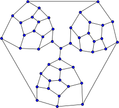

When has an unsolved conjecture been disproved by counter-example?
In 1856, Moritz Abraham Stern found a counterexample to a 100-year-old conjecture of Goldbach, which stated that every positive odd integer is either prime or the sum of a prime and twice a square. Goldbach stated the conjecture in a letter to Euler, who couldn’t refute it.
The counterexample is 5777. The only other known counterexample is 5993.
In 1946, Bill Tutte found a counterexample to Tait’s conjecture that every 3-connected planar cubic graph is Hamiltonian.

(The Tutte graph)
In 1958, C. Brian Haselgrove disproved a conjecture of Pólya, that the number of integers <N with an odd number of prime factors exceeds the number of those with an even number. Haselgrove’s counterexample wasn’t explicit, but an explicit value of N=906150257 was found later.
In 1966, Lander and Parkin disproved a conjecture of Euler which stated that an m^\text{th} power of an integer cannot be expressed as a sum of fewer than m other m^\text{th} powers.
27^5+84^5+110^5+133^5=144^5
(Later, in 1988, Noam Elkies used deep theoretical techniques to construct counterexamples with exponent 4).
In 1972, Per Enflo revolutionized Banach Space theory by constructing a separable Banach space that does not have any Schauder basis, negatively answering a question asked by Banach himself. He then constructed another Banach space without the Approximation Property (which asks if every compact operator can be approximated by finite-rank operators, in the operator-norm topology). His work created a whole new direction in Banach space theory and functional analysis.
In 1993, Gil Kalai and Jeff Kahn constructed counterexamples to Borsuk’s Conjecture, which was widely believed to be true: Can every bounded set in \R^n be partitioned into n+1 subsets of smaller diameter? The answer is No, as shown by Kalai and Kahn, despite many earlier positive results for special cases. Their construction appears in “Proofs from the Book” by Aigner and Ziegler.
This happens quite frequently for smaller, less-known conjectures, and every once in a while for the really big ones.